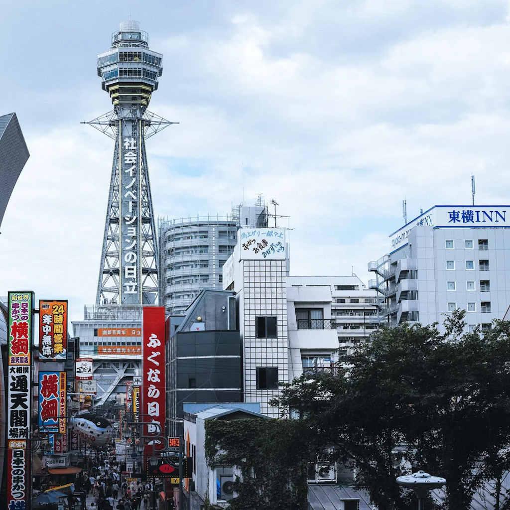
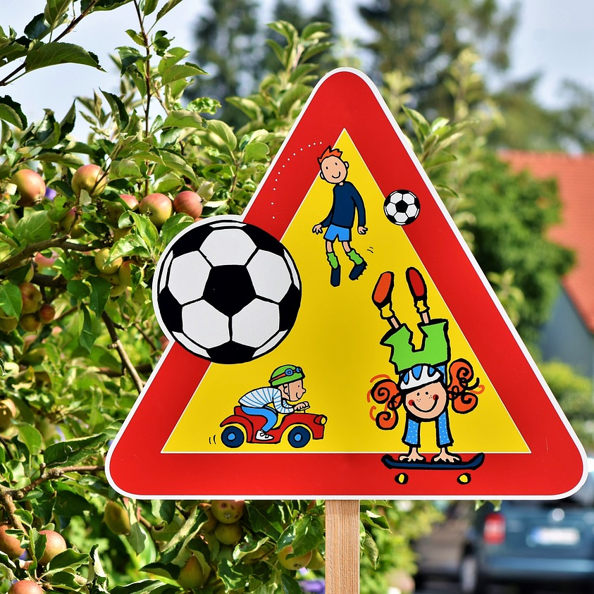
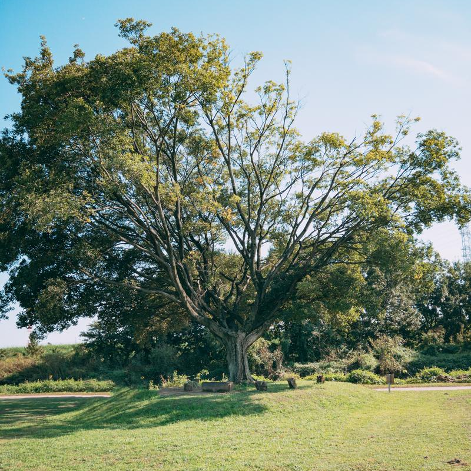

マーカー一覧
カートマーカー
a_689
ガラス面マーカー
b_689
ポータル
portal
ミドルフラワー1
treasure_medium_1
ミドルフラワー2
treasure_medium_2
ミドルフラワー3
treasure_medium_3
ミドルフラワー4
treasure_medium_4
ミドルフラワー5
treasure_medium_5
ミドルフラワー6
treasure_medium_6
ビッグフラワー1
treasure_big_1
ビッグフラワー2
treasure_big_2
ビッグフラワー3
treasure_big_3
ビッグフラワー4
treasure_big_4
ビッグフラワー5
treasure_big_5
ビッグフラワー6

treasure_big_6